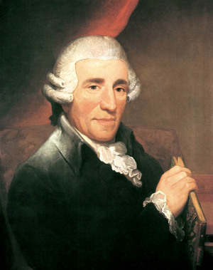

이름 : 하이든
(Franz Joseph Haydn)
출생 : 1732년 3월 31일, 오스트리아 Rohrau
ps.하이든은 교향곡의 아버지로 불리운다.
강렬하면서도 부드러운 노래를 자아내는 고전시대 작곡가이다.
대표곡
놀람 교향곡
세레나데
트럼펫 협주곡 3악장
현악 4중주 종달새
음원 감상(유튜브)
(재생되지 않을 경우, 하단에 YOUTUBE.COM을 클릭하여 유튜브에서 보시길 바랍니다.)